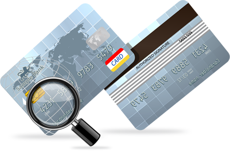

Bin Lookup
Bin lookup is very important, that you have working BIN list in your location. But we can’t know right BIN list for every location, because it is so individually for everyone. I think, you already knew what is BIN but I want to remind for your.
BIN (Bank Identification Number) – the first few digits of the card number, which indicate the issuing bank. Usually this is the first six digits. And the transaction will be completed successfully, if you would use card with suitable BIN for your area. You should make right BIN list and I will give you a few tips.
There are packs of dumps (25,50,100,500) in our cardingswipez.com. It is mix of dumps with different BINs and it is profitable purchase in the ratio price-number of dumps. Therefore that cool chance to find your BIN, namely you can check every BIN and you will understand which of them are working in your area. You can lookup bin here to identify it http://www.exactbins.com/bin-lookup You must understand that you will not have profit without investments. This works with everything.
You should encode it using the MSR in an plastic, after that go to small shops or tickets machines and test cards. Going to big stores is bad idea, it is more perilously. If you will can successfully pay – you found card with unlocked BIN and SAVE it. Finally you will have a few BINs which are not regional locked in your location.
You can begin make money Bro with these BINs, cover the investment and plan to go in store which you need.
CREDIT CARD DUMPS WITH PIN SHOP
Don’t throw away another BINs immediately, you should check them. You should use checker, for example Try2. If checker shows “Transaction Approved”, this means that these BINs are not useless for your actually. But if checker shows another code, you should test another dump with this BIN and follow the results.
You should understand that BIN list can change. Any BINs can begin to work in your area, any BINs can stop work. I advice your everytime buy several BINs which you are sure and several new BINs to test them and replenish your BIN list.